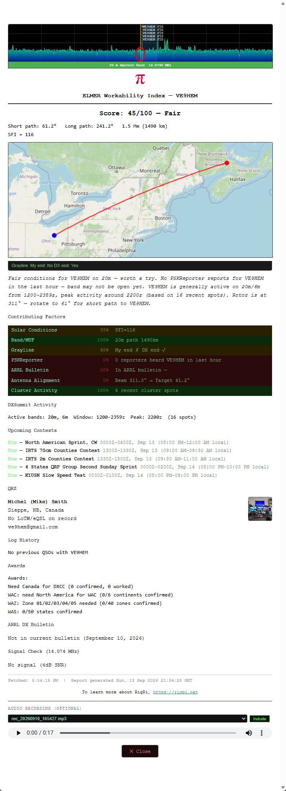
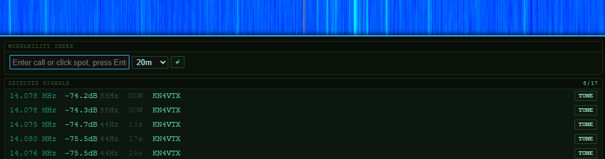

|
<< Click to Display Table of Contents >> Navigation: Views > Elmer |
The ELMER tab opens a full-window RigPi-SDR workspace. Use it when you want more room for the spectrum, waterfall and SDR controls.
1.Select ELMER in the RigPi navigation bar.
2.Connect the configured SDR, then choose the frequency, receive mode and bandwidth.
3.Open the SDR side panel for the Audio, Display and other available controls. Select Start Audio to listen in your browser and adjust the volume to a comfortable level.
4.Click a signal in the spectrum or waterfall to tune it. Use the span controls to change how much spectrum is visible.
This window uses your RigPi account and selected radio. The available receivers and functions depend on your station configuration.
Workability Index
The Workability Index is an ELMER/RigPi-SDR feature used when looking up a DX station to help assess how workable that station may be from your setup. The SDR interface includes ELMER functions for the Workability Index and signal checking.
It can use callsign-lookup information such as the operator’s name, location, grid square, country, DXCC entity, LoTW status, and photo. Grid-square data is particularly relevant to path calculations.
For fuller lookup results, configure a QRZ XML Subscription or hamQTH in Settings → External Accounts. A free QRZ account does not provide the XML API needed for RigPi’s programmatic lookup; without a QRZ or hamQTH subscription, Workability Index lookups may return limited information and may lack grid-square data.
The Workability Index includes the following:
▪Snapshot of the current Spectrum
▪The Workability Index score
▪Circle path plot from your location to the DX location
▪Workability Index summary
▪DX Summit results for the DX station
▪List of upcoming contests
▪QRZ/hamQTH info
▪Log history for the DX station
▪Award summary showing needed for this DX
▪ARRL DX Bulletin lookup
▪Is the DX station heard here?
▪Audio clip recorded using the RigPi Recorder in the Audio tab
To send an email containing the Workability Index, configure your outgoing mail server in SETTINGS > Accounts > User Editor.

Workability Index ready for emailing
Elmer Finder 
Elmer Finder watches for signals that cross the red dashed line threshold in the Spectrum. Signals that cross the threshold are identified in the RigPi Spot List by frequency. Matches are listed. Click Tune to tune the Spectrum center frequency to the spot.
The Elmer Control panel provides supported natural-language control actions. For questions about operating RigPi, signal identification or radio topics, click Ask Elmer in the Navigation bar to oppen the Ask Elmer window.
See RigPi-SDR for detailed spectrum, waterfall, audio, decoder and display instructions. See Set Up Elmer for Elmer service configuration and approval.